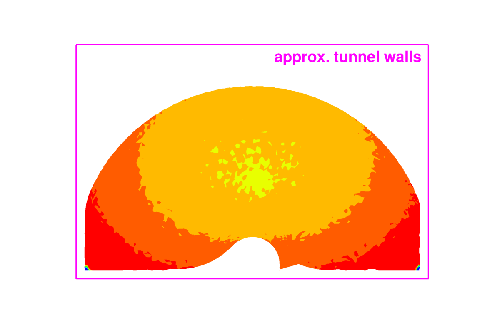

Public Access (formerly Langley Research Center)Turbulence Modeling Resource |
Exp: NASA Juncture Flow (JF) - Transitional Symmetric Wing Boundary Conditions
Return to: Exp: NASA Juncture Flow - Intro Page for Transitional Symmetric Wing
Return to: Exp: NASA Juncture Flow - Intro Page Return to: Data from Experiments - Intro Page Return to: Turbulence Modeling Resource Home Page
This page provides information from the Juncture Flow test
to help users determine appropriate boundary conditions for CFD runs.
The most important information for running CFD is listed under "GENERAL" below.
Some of the other data are not strictly boundary conditions, but
rather may be useful for checking aspects of the CFD methodology.
The following limited information about wind tunnel inflow characterization is provided:
turbulence level, wall boundary layer thickness, and "other" (total pressure and flow angularity).
Note that collecting inflow conditions is particularly difficult during a model entry in a major
wind tunnel like the 14x22, so some of this was
done in separate tests; analysis of much of it is still ongoing.
The effects of including realistic nonuniform inflow conditions in a CFD in-tunnel
run are not yet known on the quantities of interest for this case.
GENERAL
As described on the
Exp: NASA Juncture Flow - Intro Page for Transitional Symmetric Wing,
for the purpose of maintaining some consistency between input parameters for nondimensional CFD codes,
the nominal M and T were chosen to be the same between the F6 and symmetric wing because they were both
well within the ranges experienced during each test.
The nominal conditions were:
For the transition experiments, the wings were not tripped, but the fuselage nose was tripped for part
of the test. Description of the fuselage nose tripping can be found
in the notes on the
Exp: NASA Juncture Flow - Transitional Symmetric Wing Geometry) page.
It is important to note
that the inboard-most portion of the wing (extending
roughly 25 mm away from the fuselage)
is located within the fuselage's turbulent boundary layer. Information about the
boundary layer on the leading edge extension (horn) is detailed in the following document:
Slides Describing T662 IR Results (pdf file).
The 14x22 wind tunnel is controlled by measuring total pressure, static pressure (actually delta p
between the total and the static), stagnation temperature,
and dewpoint at specific locations in the tunnel and applying calibration equations. Details can
be found in
NASA/TM-2014-218513,
NASA/TM-2018-219812,
and
NASA Technical Report 20190018049, 2019.
Strategies for Running Juncture Flow CFD in the Tunnel
(pdf file) summarizes important information regarding in-tunnel computations.
TUNNEL INFLOW TURBULENCE LEVEL
Tunnel inflow turbulence was not measured during this test. However, it was measured previously,
as reported in
NASA/TP-2004-213247.
Using the results from that report, the presumed
freestream turbulence intensity for this test is approximately 0.07% - 0.08%.
TUNNEL WALL INCOMING BOUNDARY LAYER THICKNESS
Using wall rake data from this test, the 14x22 wall boundary layer thickness measured upstream of
the model (behind the start of the test section, away from the corners) was consistent on the
top and both side walls. These measures were also consistent with measurements for the earlier F6-based wing
as well as with earlier unpublished
measurements of the boundary layer on the floor. Therefore, it can be assumed that the tunnel
wall boundary layers were roughly 4 - 5 inches (100 - 125 mm) thick at 5 - 6 feet (1.5 - 1.8 m)
behind the start of the test section for the JF test. The following slides provide details from
the F6-based wing testing:
Slides Describing Tunnel Wall Rake Data (pdf file)
These data are consistent with previously-measured 14x22 wall boundary layer thickness
(14x22_Boundary_Layer_Summary.pdf.gz (gzipped)). Note
the previous measurements also included the effect of the Boundary Layer Removal
System (BLRS) on the bottom wall. The BLRS was not used in the JF test.
OTHER KNOWN TUNNEL INFLOW CHARACTERISTICS

Slides Describing Measured Inflow Characteristics (pdf file)
For additional 14x22 wind tunnel details, see
NASA TP 3008, September 1990 and
NASA TM 85662, December 1983.
TUNNEL SIDE AND TOP WALL PRESSURES
T662CpWallData.tar.gz (0.1 MB)
(There was no statistically significant difference between
tunnel wall pressures when the model was tripped vs. untripped, so this file is the same in both cases.)
Return to: Exp: NASA Juncture Flow - Intro Page for Transitional Symmetric Wing
Recent significant updates:
See notes on the
Exp: NASA Juncture Flow - Transitional Symmetric Wing Geometry) page
for discussions regarding angle-of-attack corrections, aeroelasticity, and model adherence to
as-designed shape. Strictly speaking, running a CFD model in tunnel should best represent
the experiment, but the effect on many quantities of interest (QoI) may be relatively minor.
03/13/2023 - Added pdf file describing IR results for transition on the horn
Page Curators: Christopher Rumsey,
Ethan Vogel,
Clark Pederson
Last Updated: 08/14/2025